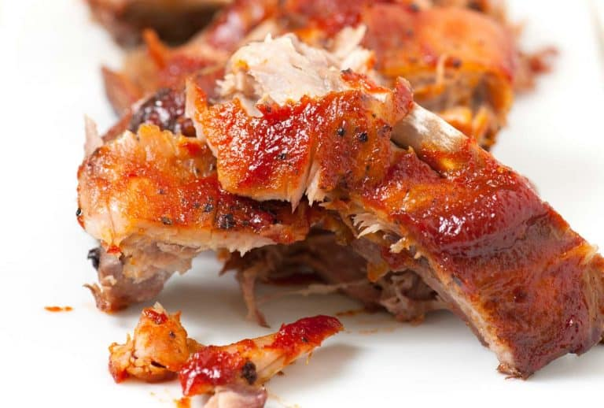

Return
SpareRibs
Easy Fall Off the Bone Oven-Baked Ribs

These are the best ribs! Baking low and
slow is our secret to fall off the bone oven-baked
ribs. Some people think that ribs should be left
to the “pit masters” — it’s just not true. Baking
ribs in the oven is seriously easy. All you
need is time — 95% of the recipe time is sitting
back and relaxing while the ribs bake.
Let’s do this! Jump to the Oven-Baked
Ribs Recipe
YOU WILL NEED
DIRECTIONS
- Remove the membrane (remember, this ensures fall off the bone ribs).
- Generously season both sides with salt and pepper. This is also a great opportunity for adding more flavor with your favorite spice rub.
- Cover the ribs with aluminum foil.
- Bake the ribs at a low temperature (275°F) for 2 ½ to 4 hours or until they are tender.
- Slather the baked ribs with barbecue sauce, and then broil (or grill) the ribs for a few minutes until the sauce is caramelized.
COOK SPAGHETTI
- About 15 minutes before the sauce finishes cooking, bring a large pot of salted water to the boil, and then cook pasta according to package directions, but check for doneness a minute or two before the suggested cooking time.
Sweet and Spicy Barbecue Sauce
You can use any barbecue sauce you like, but for us, we like to cook up our quick sweet and spicy sauce — it only takes a few minutes. It combines ketchup, brown sugar, chili sauce (like Sriracha), and spices. We’ve shared how to make it in the recipe.
I like making a double batch of the sauce and keeping it in the refrigerator. It will last up to 5 days. The sauce is perfect with chicken, on a burger, or as a dip for fries.